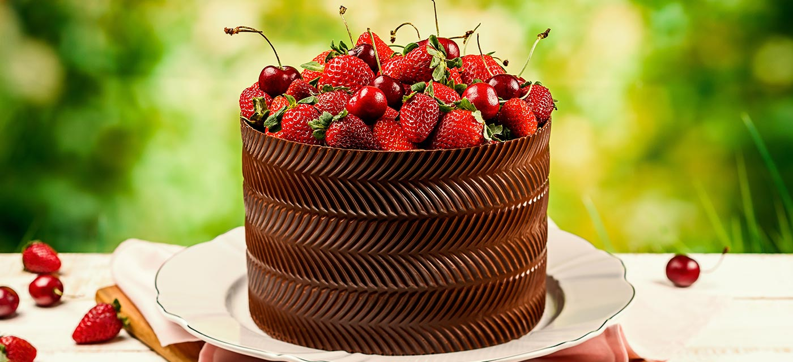

Bolos Personalizados
Nossos bolos personalizados são feitos com ingredientes frescos e de alta qualidade. Temos uma variedade de sabores e estilos para atender a todas as ocasiões, desde aniversários até casamentos.
Bolos Personalizados
Nossos bolos personalizados são feitos com ingredientes frescos e de alta qualidade. Temos uma variedade de sabores e estilos para atender a todas as ocasiões, desde aniversários até casamentos.
Doces Caseiros
Nossos doces caseiros são feitos com amor e carinho. Usamos apenas ingredientes naturais e frescos, sem conservantes ou corantes artificiais. Temos uma grande variedade de doces, desde brigadeiros até cajuzinhos.

Produtos em Destaque
Confira nossos produtos em destaque e escolha as nossas melhores criações.
Sobremessas
Sobremessas coloridas de alta qualidade, perfeito para um café da manhã ou da tarde. Possuímos opções veganas.
Ver produtoSalgados
Quer realizar um lanche ou pedir para a viagem? Aproveite a seção de salgados frescos fritos e assados. Possuímos opções veganas.
Ver produtoEntre em contato
Entre em contato conosco para tirar suas dúvidas, fazer sugestões ou encomendar salgados, doces ou bolos.